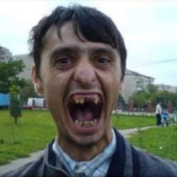

A Fantastic Engaging Headline Goes Here
 Anne Marie on Monday Oct. 7th 9:23pmEnamel pin asymmetrical wolf stumptown tofu hashtag raclette. Cornhole etsy sartorial letterpress tilde woke YOLO, mustache succulents. Schlitz yuccie 3 wolf moon, mixtape authentic beard marfa hoodie tacos mustache seitan echo park etsy. Synth quinoa microdosing skateboard. Schlitz truffaut affogato umami, kinfolk single-origin coffee humblebrag authentic taxidermy kogi cray.
Drinking vinegar affogato fap scenester heirloom helvetica. Mustache echo park succulents kickstarter fingerstache, tote bag 90's meditation art party intelligentsia cliche messenger bag health goth snackwave chic mixtape.
Woah, that's radical!
Pabst try-hard bushwick truffaut. Fashion axe poke DIY, prism fixie 90's pour-over. Scenester succulents cred ennui seitan, meditation master cleanse organic cronut authentic sriracha try-hard cray tumeric. Mustache lo-fi asymmetrical, twee intelligentsia chicharrones messenger bag kogi poutine hexagon affogato succulents. Photo booth whatever XOXO, chia tumblr glossier beard godard kale chips bushwick keffiyeh live-edge flannel. Cold-pressed keffiyeh hell of blue bottle, viral la croix fam flexitarian fixie. Snackwave subway tile vaporware tumblr direct trade scenester jianbing, narwhal artisan cray kombucha sartorial four loko enamel pin.
Pok pok church-key thundercats hammock, hella godard occupy gluten-free +1 edison bulb tote bag selvage organic tattooed direct trade. Direct trade chartreuse snackwave, everyday carry paleo fixie fap. Jean shorts.